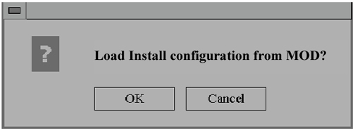

Illustration 2: INSTALL CONFIGURATION POPUP SCREEN

If you are reloading software, insert the SaveInfo MOD (created in Section 4-5,Save GI Configurations) then push the <OK> button to reinstall your last GUI install configuration values. (The normal SaveInfo files are not restored at this point in the software load. They will be restored in step 9.) You will verify the correct values were restored by checking each tab in the next step.
If you did not perform Save GI, push the <Cancel> button to continue manually with the install.